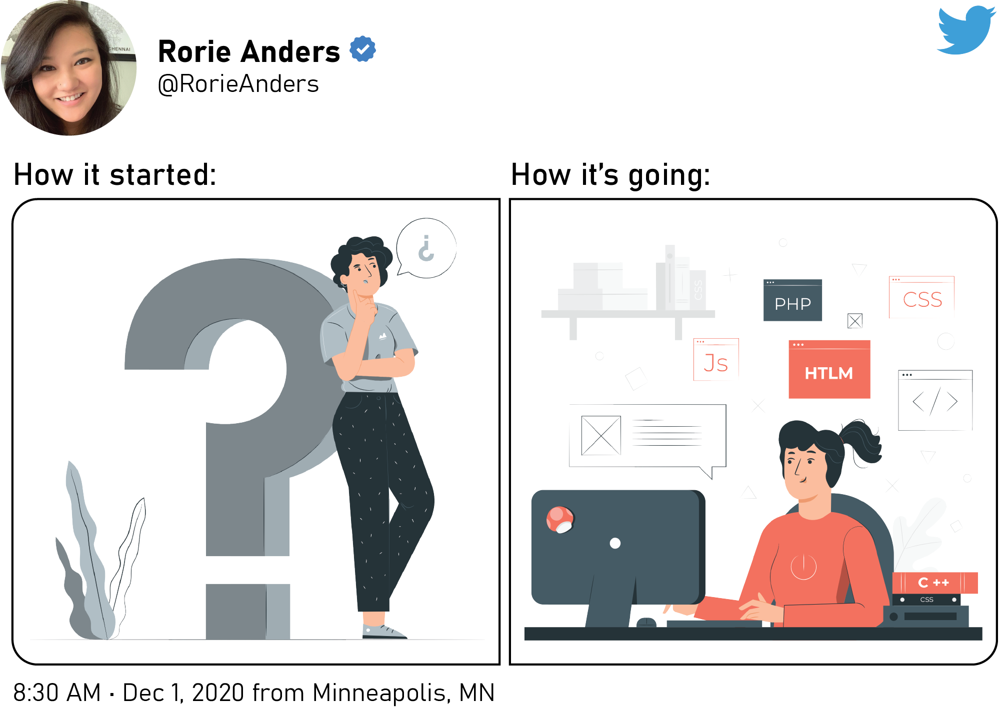

DIGITAL NARRATIVE

In conceptualizing my journey and newfound experiences in digital literacy, I immediately thought of the social media trend "How it started, how it's going." The purpose of that challenge is to post an old picture side-by-side with a current one showing progress. I decided that designing a Twitter post was a great way to symbolize the changes I have made this year.
Ever since I was little, I loved to write. Whether it was creating elaborate stories, writing a daily journal, or even endlessly practicing my handwriting to create my own "Rorie script", there was something extremely satisfactory about transferring the chaos in my mind into an organized finished product. When it came to deciding what medium to use, I was never fussy. I loved experimenting, especially as my interests became more digitally-based. Growing up alongside technology, I notice now that my creative escapades and skills advanced as technology continued to progress.
Graduating from mere paper and crayons (the 64 pack with the sharpener included, of course), I began doodling with MS Paint on our desktop PC that basically weighed as much as I did. Then I was introduced to the world of Microsoft Word Clip Art and WordArt which beautified many an essay or poster board project. The mechanics were simple enough, but the opportunities to find relevant cartoon images and crazy fonts were endless. There would be no stopping this creativity train!
As I grew older, I was introduced to more video games and software that stimulated my love for writing and illustration. I have this vivid memory of Computer Class in elementary/middle school. The first half of the class you had to complete a number of typing tasks through, then the rest of the time was free. At that time, my favorite game to play was Storybook Weaver, and I used that software for everything - from narrating make-believe stories to creating instructions on how to make a grilled cheese sandwich.
Looking back on things now, I think Storybook Weaver is where I began my love of creating booklets of stories or information. This simple video game showed me how much further my creative thoughts and ideas could go, especially when using the right tools. From there, I continually sought out more apps, software, or devices that could enhance my documentation and design efforts. Whether it was through school or just for my own interests, I always wanted to try out the "next big thing", even if that meant just simply dipping my toe in the water. I appreciate Amruta Ranade's (2018) advice to learn new technology one small piece at a time. There are so many facets to learn and gain more proficiency.
Knowing myself, I have always been a stickler for keeping things organized, putting things in a logical order, and making the finished product look spiffy. I have found that when those features are lacking, that is when I rise to challenge of filling that void. On multiple occasions I have started jobs where there was no on-boarding material provided for new hires. So, like the nerd I am, I created training manuals and user guides for software or processes for future hires to use for my own amusement. Creating documentation that clearly outlined everything someone needed to know to get the job done was exciting and fulfilling.
REFLECTION
As I reflect on my digital literacy, it is amazing to think that I started off creating angular designs in MS Paint and have progressed to complex technical illustrations in SolidWorks Composer, Adobe Illustrator, and Adobe InDesign. I have always been a self-motivated individual when it comes to learning new skills or teaching myself how to do something. I prefer taking things at my own pace and really dissecting the process down. So it is no surprise that I would take this same approach in improving my digital literacy. For me, one of the greatest benefits and appeals to technology (and its ever evolving nature) is finding ways to adapt my skills and the available tools to the next "big story".
Despite my bumpy road getting to the Technical Communication field, I appreciate all the diverse experiences I have had leading up to my current job as a Technical Writer/Illustrator. And now that I have a job that I love and am continuing my education to improve my skills, I can feel myself become more excited for what lies ahead and what opportunities I can conquer next.
With 2020 coming to an end, I basically have a year of schooling under my belt geared towards my Technical Communication career. It is crazy to think of everything I have learned in a year! I have gained more experience in intercultural communication, was introduced to the ethical theories that influence the field today, learned the importance of audience analysis and user-centric principles, and studied different design fundamentals that can complement and enhance my work. I can create a site from scratch! I never would have dreamed I could have done something as intense as that. There have been some ups and downs along the way - that's no surprise as the majority of the topics learned this semester were new. But despite the hiccups here and there, I have learned to be resourceful in learning. There are so many new and improved methods for learning and improving my competency in technology and digital platforms. Now it is just a matter of keeping up with the ever-evolving nature of technological advances.